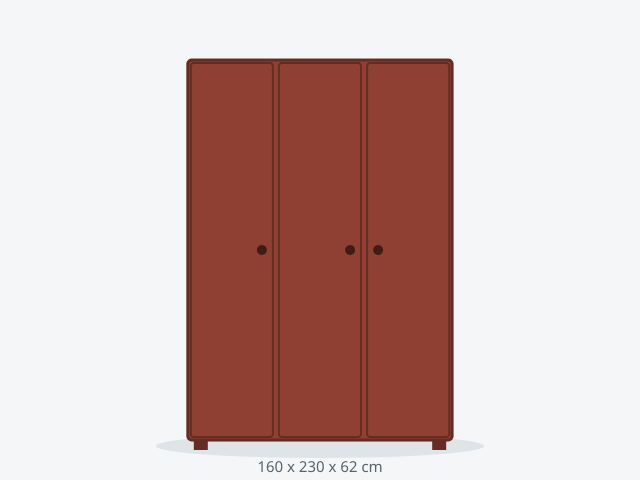

Armario CLASSIC 160 Madera
Fabricado en madera maciza de pino con acabado barnizado a mano, bajo pedido.
1099 €
Agotado · envío en 20-30 días
DisponibilidadAgotado
Dimensiones160 x 230 x 62 cm
ColoresCerezo, Nogal
Baldas6 baldas
Carga por balda45 kg
Peso total máximo300 kg
MaterialMadera maciza de pino
Puertas3 abatibles
Montaje150 min
Habitación mínima190 cm ancho x 92 cm fondo
Anclaje a paredSi
Stock0 unidades
Consejo de compra: la madera maciza admite lijado y rebarnizado, por lo que su vida útil supera a la del tablero.